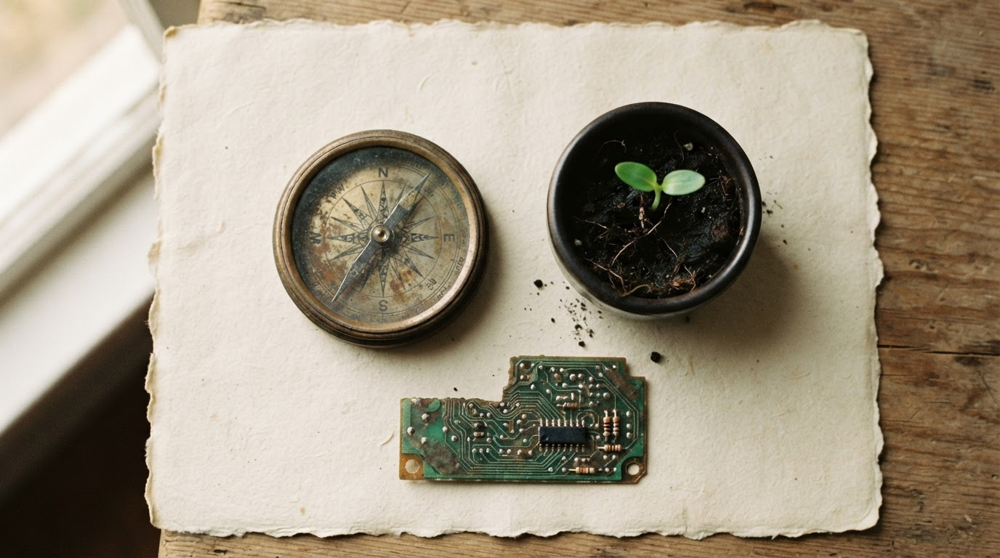

오늘날 우리는 인공지능이 인간의 사고와 의사결정을 빠르게 대체해 가는 시대를 살고 있다. 그러나 Otto Scharmer는 말한다 — 대부분의 리더가 가장 중요한 질문 하나를 놓치고 있다고.
기업들은 생성형 AI와 AI 에이전트에 막대한 투자를 쏟아붓고, 경영자들은 이 기술이 생산성과 경쟁력을 획기적으로 끌어올릴 것이라 기대한다. 지금 이 순간에도, 어느 회의실에선가 "AI로 무엇을 자동화할 것인가"가 논의되고 있을 것이다. 그러나 Scharmer는 이 흐름 속에서 리더들이 진짜 물어야 할 질문은 따로 있다고 지적한다.
"Intelligence — what is it, really?" "지능이란 과연 무엇인가?" Otto Scharmer · MIT SMR, 2026
우리는 흔히 AI가 계산을 잘하고, 방대한 데이터를 분석하며, 복잡한 패턴을 찾아낼 수 있다는 이유로 AI를 지능의 최고 형태처럼 받아들이기 시작했다. 그러나 만약 지능을 계산과 패턴 인식으로만 정의한다면, 인간은 결국 자신의 사고를 기계에 위임하는 존재로 전락할 위험이 있다.
Scharmer는 이 현상을 지능의 획일화(Intelligence Monoculture)라고 부른다. 농업에서 한 가지 작물만 재배하면 토양이 황폐해지듯이, 조직이 AI의 계산 능력만을 지능으로 간주하면 인간 고유의 사고력·창의성·공동체적 판단은 서서히 시든다. 이것이 그가 말하는 리더십의 사각지대(Blind Spot)이다.
Ⅰ / Three Intelligences세 개의 지능
AI 시대, 우리는 세 가지 지능을 동시에 다루어야 한다.
Scharmer는 지능을 하나의 축이 아니라 세 개의 축으로 재정의한다. 이것은 위계가 아니라 생태계다. 하나가 강해질 때 나머지가 약해지면, 조직은 결국 균형을 잃는다.
문제는 대부분의 조직이 AI에는 예산을, OI와 SI에는 슬로건만 쏟는다는 점이다. 그래서 회의는 데이터로 넘치고, 결정은 예리해 보이지만, 방을 나설 때 아무도 확신하지 못한다 — 우리가 정말 우리 자신의 판단을 하고 있는가.
Ⅱ / The Cave and the Sun동굴과 태양
플라톤은 2,400년 전에 이미 이 경고를 했다.
Scharmer는 플라톤의 동굴의 비유를 21세기로 옮겨온다. 현대의 리더들은 벽에 비친 그림자 대신, 대시보드와 알고리즘이 만들어내는 새로운 그림자에 갇혀 있다. 데이터는 정교하지만, 그것은 여전히 과거의 그림자다.
동굴 밖으로 나가려면, 리더는 자기 자신의 내면 상태(inner condition)를 볼 수 있어야 한다. Scharmer가 반복해서 인용하는 문장이 있다.
"The success of an intervention depends on the interior condition of the intervenor." "어떤 개입의 성공은, 개입하는 사람의 내면 상태에 달려 있다." Bill O'Brien · 인용 · Scharmer
리더는 무엇(What)과 어떻게(How)는 잘 안다. 그러나 어떤 의식 상태에서 판단을 내리고 있는가라는 질문에는 거의 시간을 쓰지 않는다. 이것이 사각지대다 — 가장 결정적인 지점이, 가장 조명받지 않는 지점이라는 아이러니.
Ⅲ / Four Stages혁신의 네 단계
조직은 어디에서 사고하고 있는가.
Scharmer는 집단 행동과 전략 혁신을 네 개의 단계로 구분한다. 대부분의 조직은 1–2단계에 머무른다. 3–4단계로 갈수록 AI만으로는 도달할 수 없는 지대가 열린다.
Ⅳ / Machine → Garden기계에서 정원으로
리더의 은유가 바뀌어야 한다.
산업화 시대의 리더는 기계의 관리자(Manager)였다. 부품을 정확히 배치하고, 오작동을 제거하고, 처리량을 높이는 사람. 그러나 AI가 그 역할의 상당 부분을 대체하기 시작한 지금, 인간 리더에게 남는 것은 무엇인가.

리더의 역할은 기계를 관리하는 관리자에서, 살아있는 시스템이 건강하게 성장하도록 돕는 정원사(Gardener)로 변화한다. Otto Scharmer
정원사는 식물을 만들지 않는다. 그는 토양의 조건을 돌본다. 무엇을 심을지 결정하지만, 자라는 방식은 식물의 것이다. 조직도 마찬가지다. 리더는 문화, 관계, 주의(attention)의 질 — 그 토양을 돌보는 사람이다.
Ⅴ / Coda결론
기술 혁신이 아니라, 인간 혁신이다.
AI 시대의 리더십은 더 빠른 계산에 있지 않다. 더 많은 대시보드에 있지도 않다. Scharmer가 마지막에 놓아둔 문장은 짧고, 흔들리지 않는다.